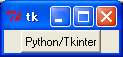
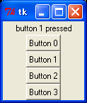
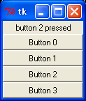
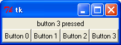
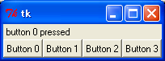
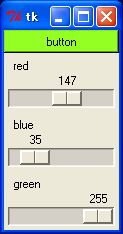
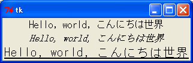
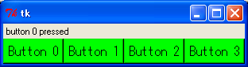

Python はシンプルでわかりやすいスクリプト言語です。現時点でもっとも有名なスクリプト言語といえば Perl になりますが、海外では Perl の次に人気のあるスクリプト言語が Python といわれています。Python はシンプルなスクリプト言語ですが簡易言語ではありません。リストやディクショナリなどの高水準なデータ構造と、モジュール、例外処理、オブジェクト指向など高度な機能を備えていて、大規模なソフトウェアでも開発できる汎用のプログラミング言語として、さまざまな分野で使われています。
GUI (Graphical User Interface) アプリケーションの作成もそのひとつです。Windows のような GUI に対応したアプリケーションを作ることは、コマンドプロンプトで動作するプログラムを作るよりも相当の労力を必要とします。さらに、GUI はユーザーの使い勝手に直結しているため、プログラムの改良を頻繁に行うことがあります。このため、GUI の開発は簡単にプログラムの修正と実行が行えるスクリプト言語が適しているといわれています。
GUI 用のスクリプト言語で有名なのが Tcl/Tk です。筆者も Tcl/Tk を愛用していますし、このホームページで拙作の入門記事やミニゲーム集を公開しています。Tcl/Tk は優れた開発環境ですが、実際に使っていると Tcl 言語に不満が出てきます。Tcl はシェルスクリプトを拡張したコマンド言語、つまり簡易言語に過ぎません。簡単なアプリケーションならば、数行から数十行でプログラムを記述できますが、数百行以上のプログラムを作るのには適していません。
Tcl は好まないが Tk を愛してやまない人々が、自分の好みの言語に Tk を移植する試みが行われました。もちろん、Python でも Tk を使うことができます。それが Python/Tkinter です。Python には標準で Tkinter が含まれているので、Python をインストールするだけで、すぐに Python/Tkinter を使うことができます。
本稿では、簡単なプログラムを作りながら Python/Tkinter の使い方を説明していく予定です。とりあえず、Tcl/Tk お気楽 GUI プログラミング入門編、Tcl/Tk お気楽 GUI プログラミング応用編 と同じ例題を Python/Tkinter で作ってみようと思います。よろしくおつきあいください。
GUI アプリケーションの場合、ユーザーからの入力やシステムの状態変化など、ある出来事をきっかけにプログラムが実行されます。この出来事を イベント(event) といい、イベントをきっかけにしてプログラムが起動されることを イベントドリブン(eventdriven:イベント駆動) といいます。イベントドリブン型のアプリケーションは、一般に次のようなメインルーチンを持っています。
2 から 4 を イベントループ と呼び、アプリケーションはユーザーからの入力などのイベントを待ちます。そして、3 の処理に対応する機能が バインディング(binding) です。バインディングは、ウィンドウでイベントが発生したときに、それに応じて定義したプログラムを実行します。このプログラムを イベントハンドラ とか コールバック関数 と呼びます。
GUI アプリケーションとしての最低限の機能は Python/Tkinter が面倒を見てくれるので、私達はアプリケーション固有の処理をプログラミングするだけで済みます。
Python/Tkinter で GUI アプリケーションを作る場合、次のような手順が必要になります。
このほかに、必要に応じてコールバック関数を作成します。Tcl/Tk の場合、1 と 3 の処理はプログラムする必要はありませんが、Python/Tkinter では自分でプログラムを記述します。それでは実際にプログラムを作ってみましょう。ボタンをひとつ表示します。
リスト：ボタンの表示 from Tkinter import * root = Tk() button = Button(root, text = 'Python/Tkinter') button.pack() root.mainloop()
最初にモジュール Tkinter をインポートしてください。次に、Tk() でメインウィンドウを作成します。Tkinter はオブジェクト指向機能を使って作られています。Tk() はクラス Tk のインスタンス（オブジェクト）を生成して返します。このオブジェクトが画面上のメインウィンドウに対応します。
次にボタンを作ります。Tk では GUI 用の部品のことを ウィジェット(widget) と呼びます。Tk にはたくさんのウィジェットが用意されていて、それをウィンドウに配置することで簡単に GUI アプリケーションを作成することができます。
Tkinter の場合、ウィジェット名と同じクラスが用意されていて、ボタン (button) を作るには Button() でボタンのオブジェクトを生成します。このとき、第 1 引数にウィジェットを配置するウィンドウのオブジェクトを渡します。引数 text = 'Python/Tkinter' は、ボタンに表示されるテキストを指定します。
この段階では、ボタンはまだ配置されていません。ボタンの配置はメソッド pack() で行います。Tk の場合、ウィジェットの配置はジオメトリマネージャが行います。3 種類のマネージャがあって、pack() はそのうちのひとつです。button.pack() が実行されると、ウィンドウにボタンが配置されます。最後にメソッド mainloop() を呼び出して、イベントループを開始します。
簡単なプログラムですが、Python/Tkinter で GUI アプリケーションを作る場合の基本的な構造を表しています。あとは、イベントに対応するコールバック関数を作ります。この例題では、ボタンを表示しただけですが、押したときの動作をプログラムすることができます。
 Python/Tkinter のウィンドウ
Tkinter に用意されている主なウィジェットを表に示します。
| ウィジェット名 | クラス名 | 概要 |
|---|---|---|
| フレーム | Frame | ウィジェットを格納する枠組みを作る |
| ラベル | Label | 文字列やイメージを表示する |
| メッセージ | Message | 複数行の文字列を表示する |
| ボタン | Button | ボタンを作る |
| ラジオボタン | Radiobutton | ラジオボタンを作る |
| チェックボタン | Checkbutton | チェックボタンを作る |
| リストボックス | Listbox | リストボックスを作る |
| スクロールバー | Scrollbar | スクロールバーを作る |
| スケール | Scale | スケールを作る |
| エントリー | Entry | 1 行の文字列の入力と編集 |
| メニュー | Menu | メニューを作る |
| メニューボタン | Menubutton | メニューボタンを作る |
| ビットマップ | Bitmap | ビットマップを作る |
| キャンバス | Canvas | キャンバスを作る |
| テキスト | Text | テキストの入力と編集 |
| ラベルフレーム | LabelFrame | ラベル付きフレーム |
| スピンボックス | Spinbox | スピンボックスを作る |
| ペインウィンドウ | PanedWindow | ペインウィンドウを作る |
なかにはあまり見かけないものもありますが、大部分は Windows でもお馴染みのウィジェットだと思います。
ウィジェットは次の形式で生成します。
widget = widgetClass(parent, option = value, .... )
これで parent に配置するウィジェットが生成されます。parent にはメインウィンドウやほかのウィジェットのオブジェクト、widgetClass には生成するウィジェットのクラス名を指定します。返り値は生成したウィジェットのオブジェクトです。メインウィンドウもウィジェットのひとつですが Tk() で生成します。
ボタンの例題のように、ウィジェットにはユーザーがデータを設定することができます。これを オプション といいます。最初に、ほとんどのウィジェットで共通するオプションを説明します。
| foreground (fg) | 文字や線を描くのに使用する色を指定 |
| background (bg) | 背景色の指定 |
| text | ウィジェット内に表示されるテキスト |
| textvariable | テキストを格納するオブジェクトを指定 |
| image | ウィジェット内に表示されるイメージ |
| bitmap | ウィジェット内に表示されるビットマップ |
| borderwidth (bd) | ウィジェットの枠の幅 |
| relief | ウィジェットの枠のスタイル |
| height | ウィジェットの高さ |
| width | ウィジェットの幅 |
| anchor | ウィジェットや表示されるデータの位置を指定 |
ウィジェットの幅と高さは、テキストを表示するウィジェットでは文字数、それ以外のウィジェットはピクセル単位となります。オプションは option = value の形式で指定します。
オプションはウィジェットを生成するときに指定しますが、あとからオプションの値を変更することもできます。これにはメソッド configure() を使います。また、オプションの値を参照するにはメソッド cget() を使います。
widget.configure(option = value, ...) widget.cget(option_name)
cget() の option_name はオプションを文字列で指定します。configure() と cget() は全てのウィジェットで共通に使用することができます。Python/Tkinter では、このようなウィジェットを操作するメソッドが多数用意されています。ちなみに、Tcl/Tk ではウィジェットを操作するメソッドのことを、「ウィジェットコマンド」と呼びます。
最初は簡単に扱えるボタン (Button) とラベル (Label) から始めましょう。ラベルはウィンドウに文字列を表示するウィジェットです。まず、テキストを表示するウィジェットでよく使用されるオプションを示します。
| font | 使用するフォント |
| underline | 下線つき表示する文字位置 |
| padx | 水平方向の詰めもの |
| pady | 垂直方向の詰めもの |
ボタンにはもうひとつ重要なオプションがあります。
command 押したときに実行する関数を指定
たとえば、command に Python を終了する関数 exit() を指定し、そのボタンを押すとアプリケーションが終了することになります。このような関数をコールバック関数と呼びます。Python の場合、引数に関数を渡すのは簡単にできますが、ボタンの command で指定した関数は引数無しで呼び出されることに注意してください。たとえば、exit() に引数を渡して終了する場合は、次のように指定します。
Button(root, text = 'Python/Tkinter', command = lambda : sys.exit(1))
ラムダ形式を使うと簡単に指定することができます。引数が不要の場合は command = sys.exit でもかまいません。
ボタンを作ったら、それをウィンドウに配置しないといけません。Tk ではジオメトリマネージャ (Geometry Manager) がウィジェットの配置を担当し、3 種類のマネージャが用意されています。
いちばんよく使われるマネージャが Packer です。Placer はウィジェットの位置を座標で指定するため、並べて表示する場合には設定が少々面倒です。たいていの場合は Packer で用が足りるので、Placer を使う機会はあまりないでしょう。電卓やマインスイーパーのように、ボタンを格子状に配置する場合は Gridder が便利です。
それでは簡単な例題として、押したボタンの番号をラベルに表示するプログラムを作ります。最初にラベルを定義します。
リスト : ラベルの定義
from Tkinter import *
root = Tk()
buff = StringVar()
buff.set("")
label = Label(root, textvariable = buff)
label.pack()
Tkinter の場合、オプション textvariable にはクラス Variable のオブジェクトを指定します。具体的にはサブクラス StringVar, IntVar, DoubleVar, BooleanVar を使います。文字列の場合は StringVar() でオブジェクトを生成します。メソッド set() でデータをセットし、メソッド get() でデータを得ることができます。set() で値を書き換えることで、ラベルの表示を変更することができます。
次はボタンを作ります。複数のボタンを作る場合、それに対応するコールバック関数を同じ数だけ作るのでは面倒です。そこで、コールバック関数を生成する関数をひとつだけ作成し、それにボタンの番号を渡すことにします。プログラムは次のようになります。
リスト：ボタンの定義
# コールバック関数の生成
def make_cmd(n):
return lambda : buff.set('button %d pressed' % n)
# ボタンの生成
for x in range(4):
button = Button(root, text = "Button %d" % x, command = make_cmd(x))
button.pack()
root.mainloop()
関数 make_cmd() でコールバック関数を生成します。make_cmd() はクロージャを返すことに注意してください。make_cmd() の引数 n にボタン番号を渡すことで、ボタン番号がクロージャに保存されます。したがって、コールバック関数を実行すると、押したボタンの番号を表示することができます。
それでは実行してみてください。
 button 1 を押した動作
ボタンが縦に 4 つ表示されましたね。そして、ボタンを押すといちばん上に文字列が表示されます。つまり、ボタンを押すという動作によってプログラムが実行されたわけです。
次は、pack() について説明しましょう。pack() はウィジェットを上から順に詰め込み、ウィンドウに配置するパッケージマネージャです。例題ではボタンの幅がウィンドウより小さいですが、これをいっぱいに広げるには fill オプションを使います。方向は 'x', 'y' で指定します。両方向に広げるには 'both' を指定します。実際に fill を 追加して確かめてください。
なお、'x', 'y', 'both' などオプションでよく使われる値は、モジュール Tkinter に変数として定義されています。値を英大文字にしたものが変数名になります。これらの値は変数 X, Y, BOTH に格納されているので、それを使ってもかまいません。詳細は Python/Tkinter のマニュアルをお読みください。
 fill = 'both' を指定し、button 2 を押した動作
詰め込む方向を変えるにはオプション side を使います。指定できる値は 'top', 'bottom', 'left', 'right' の 4 つです。ウィジェットによって詰め込む方向を変えてもかまいません。ボタンを配置する pack に side = 'left' を追加して実行してみましょう。一番上にラベルが配置され、その下にボタンが 4 つ左から順番に並べられます。
 side = 'left' を指定し、button 3 を押した動作
このとき、ラベルはウィンドウの中央に表示されます。これを左側に寄せるには anchor オプションを設定します。指定が省略された場合は中央になります。指定方法は次の記号を使います。
nw --- n --- ne | | w c e | | sw --- s --- se 図：-anchor の指定方法
記号はそれぞれ 'e' (East), 'w' (West), 's' (South), 'n' (North), 'c' (Center) を表します。ラベルを pack するときに、オプション anchor = 'w' を指定すると左寄せに表示します。
 anchor = w を指定し、button 0 を押した動作
このほかにも、 pack() にはいろいろなオプションが用意されています。
Python に標準で添付されている Tkinter のマニュアルには、オブジェクト指向機能を使って GUI アプリケーションを作成する方法が説明されています。たとえば、ボタンを一つ表示するプログラムは次のようになります。
リスト : フレームを継承する方法
from Tkinter import *
class App(Frame):
def init(self):
button = Button(self, text = "Python/Tkinter")
button.pack()
def __init__(self, master = None):
Frame.__init__(self, master)
self.pack()
self.init()
app = App()
app.mainloop()
Frame はフレームウィジェットを表すクラスです。Frame を継承してアプリケーションを表すクラス App を作成します。フレームには複数のウィジェットを配置することができます。App はフレームを継承しているので、App() でオブジェクトを生成すると、そこにウィジェットを配置することができます。
特殊メソッド __init__() では、スーパークラス Frame の __init__() を呼び出して初期化に必要な処理を行います。ここでメインウィンドウが生成されます。次に、pack() で自分自身（フレーム）をメインウィンドウに配置します。そして、メソッド init() を呼び出してフレームに配置するウィジェットを生成します。
init() ではボタンを一つ生成します。button は init() のローカル変数です。他のメソッドでボタンを利用する場合は、インスタンス変数 (self.button) にするとよいでしょう。引数 self には App のオブジェクトが渡されるので、これを Button() の第 1 引数に渡します。そして、button.pack() でボタンをフレームに配置します。
大きな GUI アプリケーションを作成する場合、オブジェクト指向機能を使ってアプリケーションをクラスにまとめるのは良い方法だと思います。ですが、本稿で扱うような小さなプログラムで、オブジェクト指向機能を使うのはちょっと面倒です。そこで、本稿では Frame を継承しない方法でプログラムを作ることにします。
今回はテキストやボタンに色をつけてみましょう。Tk の場合、色の指定は名前または数値で行います。名前は red, green, blue のように指定します。色の名前は大文字小文字の区別をしません。red と RED は同じ色を表します。数値の場合は、赤、緑、青の三原色を 16 進数で指定します。指定方法には、次の 4 通りの形式があります。
色の指定は # から始まり、R, G, B はそれぞれ赤、緑、青の強度を表す数値です。それぞれの色を表す桁数は同じでなければいけません。1. では、R, G, B が 16 段階なので 4096 色の指定ができます。2. は 256 段階なので、約 1600 万色の指定ができます。3. 4. はほとんど使われることはないでしょう。実際の表示は使用しているハードウェアの環境に依存します。
それでは、R, G, B の値で色がどのように変化するか、サンプルプログラムを作って確かめてみましょう。数値の入力はキーボードから行ってもいいのですが、ここではスケール (scale) というウィジェットを使いましょう。スケールは整数値を表示し、スライダをドラッグするかスケールをクリックすることで、その値を更新することができます。スケールで使用する主なオプションを表に示します。
| label | スケールのラベル |
| from_ | スケールの最小値 |
| to | スケールの最大値 |
| orient | スケールの方向 |
| showvalue | 値を表示するか |
| variable | スケールの値を格納するオブジェクトを指定 |
| command | 値が変化したときに実行するコマンド |
| resolution | 解像度 |
label はスケールの隣に表示する文字列を指定し、form_ と to で値の範囲を指定します。from は Ptyhon のキーワードなので、Tkinter では from_ を使います。orient はスケールの方向を指定するもので、orizontal または h を指定すると水平になり、vertical または v で垂直になります。デフォルトでは垂直に設定されます。
showvalue は現在の値を表示するかを設定します。variable はスケールの値を格納する変数を指定しますが、Tkinter の場合はクラス Variable のオブジェクトを指定します。整数値の場合は IntVar() を使います。
command は、スケールの値が変更されたときに実行する関数を指定します。このとき、スケールの値が引数として関数に渡されます。たとえば、関数 foo() を指定した場合、呼び出されるときは foo(128) となります。このほかにも、ウィジェットの大きさを設定するオプションがあります。
スケールには configure() や cget() のほかに、次に示すメソッドが用意されています。
get() と set() 以外のメソッドは使う機会はあまりないでしょう。
それでは、ボタンの背景色を変化させるプログラムを作ります。
リスト：スケールの使用例
# coding: utf-8
from Tkinter import *
# メインウィンドウ
root = Tk()
# スケールの値を格納する
red = IntVar()
red.set(0)
blue = IntVar()
blue.set(0)
green = IntVar()
green.set(0)
# ボタンの背景色を変更
def change_color( n ):
color = '#%02x%02x%02x' % (red.get(), green.get(), blue.get())
button.configure(bg = color)
# ボタン
button = Button(root, text = 'button', bg = '#000')
button.pack(fill = 'both');
# スケール
s1 = Scale(root, label = 'red', orient = 'h',
from_ = 0, to = 255, variable = red,
command = change_color)
s2 = Scale(root, label = 'blue', orient = 'h',
from_ = 0, to = 255, variable = blue,
command = change_color)
s3 = Scale(root, label = 'green', orient = 'h',
from_ = 0, to = 255, variable = green,
command = change_color)
# ウィジェットの配置
s1.pack(fill = 'both')
s2.pack(fill = 'both')
s3.pack(fill = 'both')
# メインループ
root.mainloop();
スケールの値を格納する IntVar のオブジェクトは、それぞれ red, blue, green というグローバル変数にセットします。値は 0 に初期化しておきます。ボタンのオブジェクトは背景色を変更するときに必要になるので、グローバル変数 button に格納しておきます。値が変化したときに実行する関数が change_color() です。
文字列のフォーマット操作を使って red, green, blue の値をカラーコードに変換します。数値を 2 桁にそろえるため書式は %02x としています。その後、ボタンの背景色を configure メソッドで変更します。これで、スライダの動きによってボタンの色を変化させることができます。
 スライダで RGB を指定する
今度は色だけではなくフォントも変更してみましょう。フォントの指定には、いくつかの方法があるのですが、Windows 上ならば次の形式で行えばいいでしょう。
(family, size, style1, style2)
フォントはタプルを使って指定することができます。family はフォント名を表します。size はフォントの大きさを表し数値で指定します。style1 と style2 はフォントのスタイルで、次の中から選びます。
style1 : normal, bold, roman, italic style2 : underline, overstrike
style1 と style2 は省略することができます。それでは、フォントを変更してみましょう。次のプログラムを見てください。
リスト：フォントの変更 # coding: utf-8 from Tkinter import * root = Tk() str = u'Hello, world, こんにちは世界' Label(root, text=str, font=(u'ＭＳ ゴシック', 12)).pack() Label(root, text=str, font=(u'ＭＳ 明朝', 12, 'italic')).pack() Label(root, text=str, font=(u'ＭＳ ゴシック', 16, 'underline')).pack() root.mainloop()
Python/Tkinter で日本語を使用する場合、文字列の前に u を付けて unicode に変換します。テキストを表示するウィジェットは、オプション font で使用するフォントを指定することができます。それでは実行してみましょう。
 フォントをいろいろ変えてみる
このように、個々のウィジェットのフォントはオプション font で変更できますが、すべてのラベルウィジェットで使用する共通のフォントを設定したい場合もあるでしょう。Tk は各オプションのデフォルト値を持っています。このため、ユーザーは必要なオプションを指定するだけで、簡単にプログラミングすることができます。このデフォルト値はメソッド option_add() を使って変更することができます。
たとえば、アプリケーションで使用するフォントを変更する場合は、次のように行います。
リスト : デフォルト値の設定
root = Tk()
root.option_add('*font', 'FixedSys 14')
root はメインウィンドウを表します。これで、テキストを表示するウィジェットは、指定したフォントを使って表示されます。第 1 引数はデフォルト値を設定するウィジェットを表すパターンです。第 2 引数が設定する値です。第 3 引数は省略していますが、優先順位 priority (0 - 100) を設定することができます。
パターンは、アプリケーション名、ウィジェット名、オプション名をドットで区切って表しますが、ワイルドカード * やウィジェットを表すクラス名を指定することもできます。*font の場合は、アプリケーションで使用するフォントを指定することになります。ラベルに対してフォントを設定したい場合は *Label.font となります。
たとえば、前回作成したボタンを表示するプログラムに次の 2 行を加えてください。
root.option_add('*Button.font', 'FixedSys 14');
root.option_add('*Button.background', 'green');
これで、表示されるボタンのフォントと背景色は、設定された値となります。
 ボタンのフォントと背景色を変更